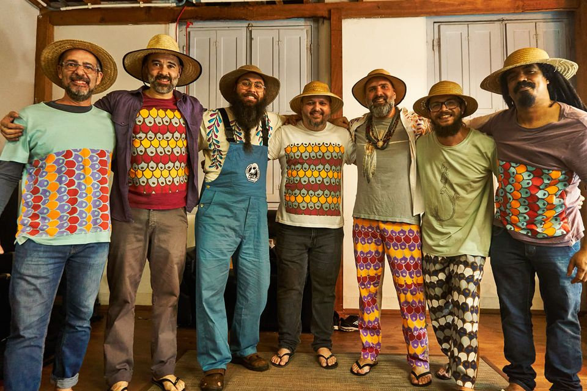
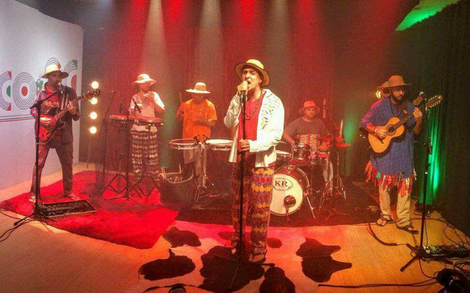
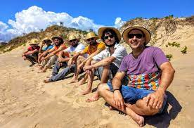

O Grupo Cultural Tarrafa Elétrica tocou suas primeiras notas em 2004, com o lançamento da música “Seu Arildo”. Essa música se destacou no repertório catarinense por consagrar diversos elementos da cultura peixeira. Em 2004, a música “Seu Arildo” ganhou projeção nacional por meio do Canal Futura (https://youtu.be/r99aYVvXPDE) e, em 2005, foi selecionada na 2a Mostra de Música Catarinense do SESC. Desde então, a música tem conquistado elevado prestígio, sendo tocada e gravada por diversos grupos catarinenses e utilizada em projetos artísticos diversos.
Com forte apelo popular e já com uma considerável legião de fãs, o grupo conseguiu registrar seu primeiro trabalho - o álbum “Linhada de Cultura” - no ano de 2009 e, desde então, é tido como referência quando se trata da cultura litorânea catarinense. No mesmo ano, assinamos a trilha sonora do documentário “Dez Ilhas e Um Mundo”, da TAC Filmes. Rodado no Brasil e em Portugal, este documentário apresenta uma viagem no tempo e na história, mostrando as semelhanças e heranças deixadas pelos açorianos em Santa Catarina. O documentário foi amplamente veiculado pela RBS e pela CineBrasil TV.
Em 2013 o Tarrafa Elétrica foi contemplado com o Prêmio Elisabete Anderle, através do qual gravaram o primeiro DVD, intitulado “10 Anos Tarrafeando”. Este trabalho, realizado em 2014, tem recebido elogios da crítica, e foi veiculado nacionalmente no Canal de TV por assinatura Music Box Brasil.
Apesar da grande aceitação e sucesso que este material atingiu a nível nacional, o grupo sentiu a necessidade de uma maior permeabilização das mensagens dentro do público mais valioso: as pequenas comunidades litorâneas de Santa Catarina, que enfrentam em seu dia-a-dia as situações e desafios cantados em nossa música, e cujo acesso a bens culturais é restrito. A partir desta percepção, desenvolveram o projeto de Circulação do show “10 Anos Tarrafeando” - projeto contemplado pelo Prêmio Elisabete Anderle - Edição 2015 - que levou esta apresentação a 7 cidades do litoral de Santa Catarina, com foco nas regiões menos favorecidas no acesso à bens culturais. As apresentações ocorreram gratuitamente em eventos públicos de pequeno porte, promovidos por prefeituras, associações e fundações culturais das cidades contempladas.
Ainda em 2015, repetindo a parceria com a TAC Filmes, o grupo assina a trilha sonora do documentário “Nos baixos do Maranhão”, um valioso registro histórico cultural da colonização açoriana no estado do Maranhão. Um dos primeiros destinos dos açorianos, ainda no começo do século XVII, o estado ainda preserva diversas tradições de seus antepassados. Para encerrar o ano, ainda na área de audiovisual, o grupo é tema do documentário “Na direção do Som”, que conta os bastidores da produção do clipe da música “A tristeza e felicidade do pescador” - clipe dirigido por Marcelo Tem Tem, um pescador que há muitos anos perdeu totalmente a visão. O documentário é uma produção da SeteBarba Filmes e foi selecionado na 10ª Mostra de Cinema Direitos Humanos e exibido em todas as capitais brasileiras.
Em 2016 colocam em prática uma série de projetos, e novamente a união com seus parceiros vem ditando o ritmo das “remadas”. Em agosto, encerrando a circulação de seus shows pelo estado, o Tarrafa Elétrica e o Grupo de Percussão de Itajaí protagonizaram um show memorável no Teatro Municipal de Itajaí. Para fechar com chave de ouro o ano de 2016, junto a TAC Filmes, o grupo apresentou em outubro “Entre a Areia e o Mar”, um projeto de Live Cinema que apresenta em vídeo histórias de pescadores artesanais da região, musicadas ao vivo pelo Tarrafa Elétrica.
Em 2017, o grupo participou do projeto “As Lendas de Navegantes”, que deu origem a quatro curtas-metragens animados que registram lendas urbanas e causos ligados à cidade de Navegantes/SC.
No ano de 2018 o grupo deu início a uma ideia ousada e pioneira no estado de SC, intitulada Projeto Cardume. Com o objetivo de reunir e engajar os seguidores da banda na produção de um novo álbum, logo a ideia tomou forma e força através de um grupo criado na rede social Facebook. Enquetes, discussões e sugestões norteiam cada etapa do processo de produção. Com o apoio da Lei Municipal de Incentivo a Cultura de Itajaí e com a construção colaborativa com os fãs o projeto resultou em oito faixas. O álbum Cardume foi lançado no final de 2019 e está disponível nas principais plataformas de streaming do mundo.
Outro atividade realizada regularmente com o apoio do Tarrafa é o Projeto ““Tartaruga de Mamão”: Interpretação e reinterpretação folclórica/socioambiental em atividades extensionistas”: Neste projeto o grupo trabalha com cerca de 20 alunos do ensino médio (curso técnico integrado em Recursos Pesqueiros do Instituto Federal de Santa Catarina - IFSC) para a composição de uma releitura do Boi-de-Mamão com temática marinha. Cada personagem tradicional deste folguedo será reinterpretado por um animal marinho: nossa Maricota é uma Lula-Gigante; nossa bernunça é um Tubarão Mangona; e nosso Boi é uma Tartaruga-de-couro que, ao comer acidentalmente um lixo marinho, morre e, com a ajuda do público, revive.
Por fim realizamos também em parceria com o IFSC o evento “Mariscada Cultural com Risoto de Marisco do Seu Arildo”, com objetivo sensibilizar para aspectos da cultura regional, com ênfase às diferentes linguagens artísticas (música, teatro, performance, história em quadrinhos, cinema e a gastronomia), celebrando a “Cultura Peixeira”, detentora de uma forte ligação com o mar, a pesca e as manifestações artísticas tradicionais. Além disso, propiciam aos alunos do IFSC e à comunidade em geral uma oportunidade de aprendizagem diferenciada, que promove a troca intergeracional de saberes e fortalece a identidade local e a autoestima. A concepção do evento foi inspirada na música “Seu Arildo”, que convida o ouvinte a se deliciar com o rico cardápio produzido por um velho pescador artesanal da região e detentor da famosa receita de Risoto de Marisco (https://youtu.be/JB8XP9UTgIs). O evento teve sua primeira edição em novembro de 2017, esse ano temos perspectiva de realização da quarta edição, visto que nos anos anteriores em função da pandemia o evento não pode ser realizado.
Atualmente o grupo trabalha na produção e circulação do Show Cardume, o álbum que foi lançado no final de 2019 em virtude da pandemia não pode ser apresentado ao vivo.